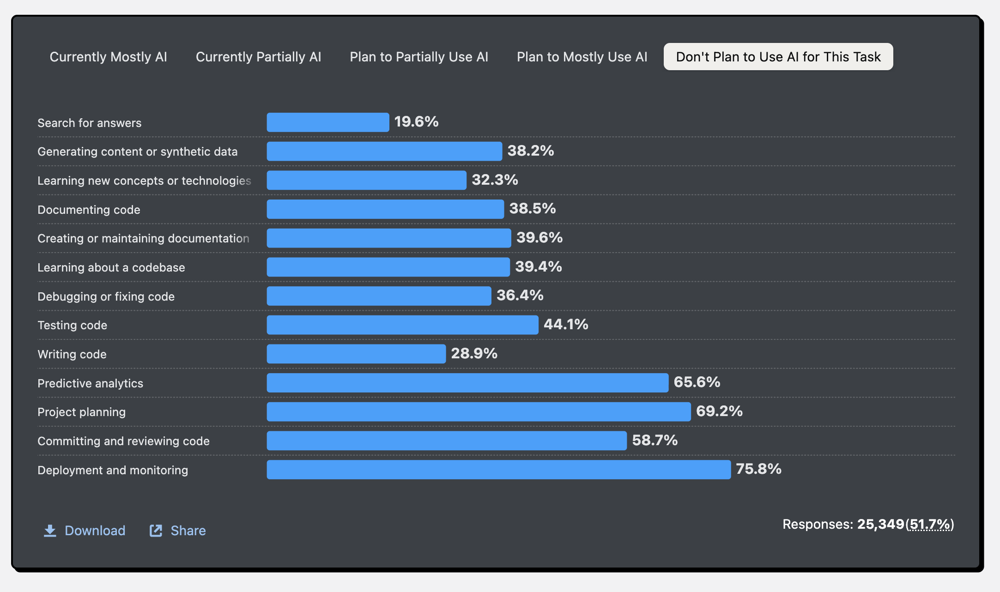
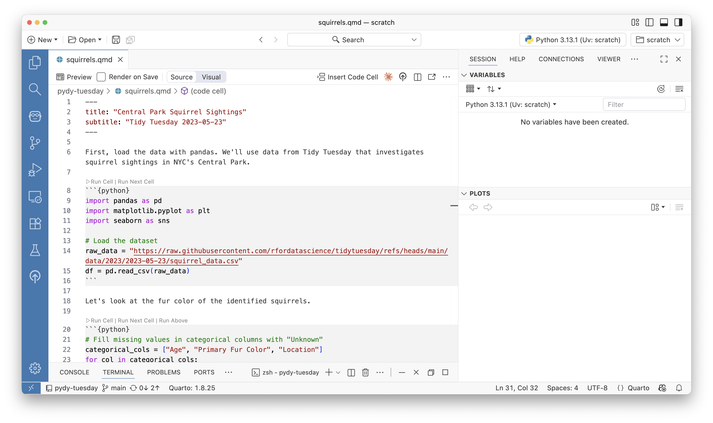
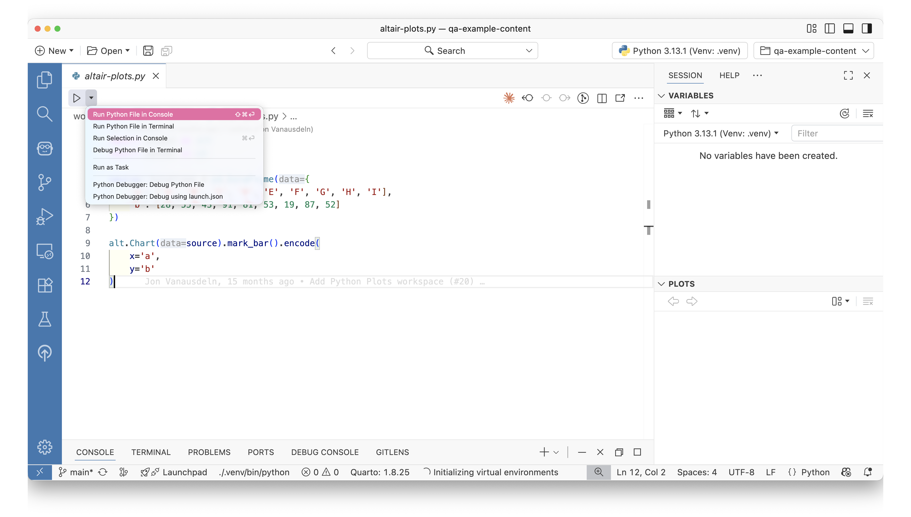
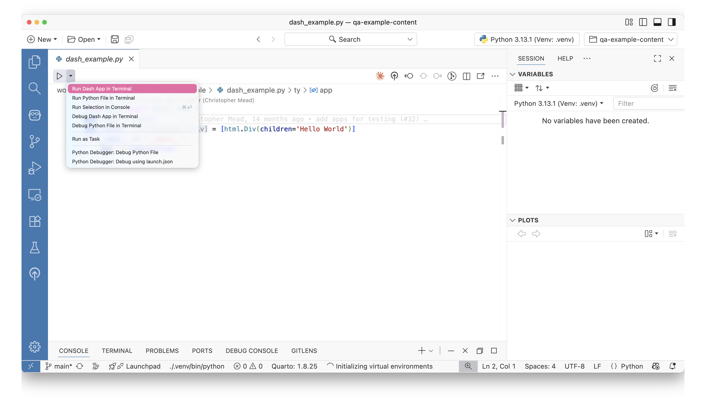
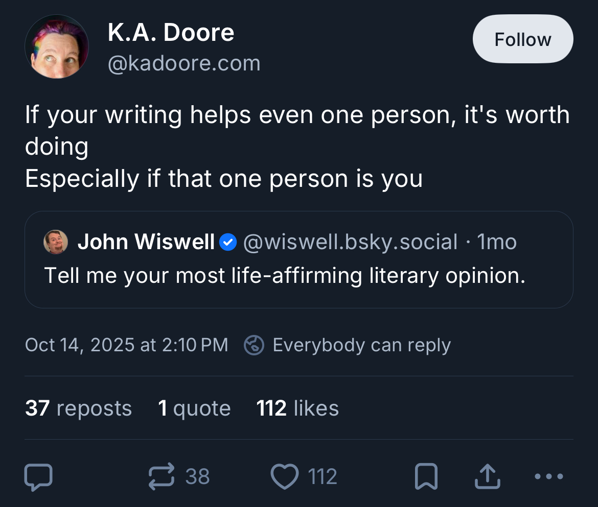
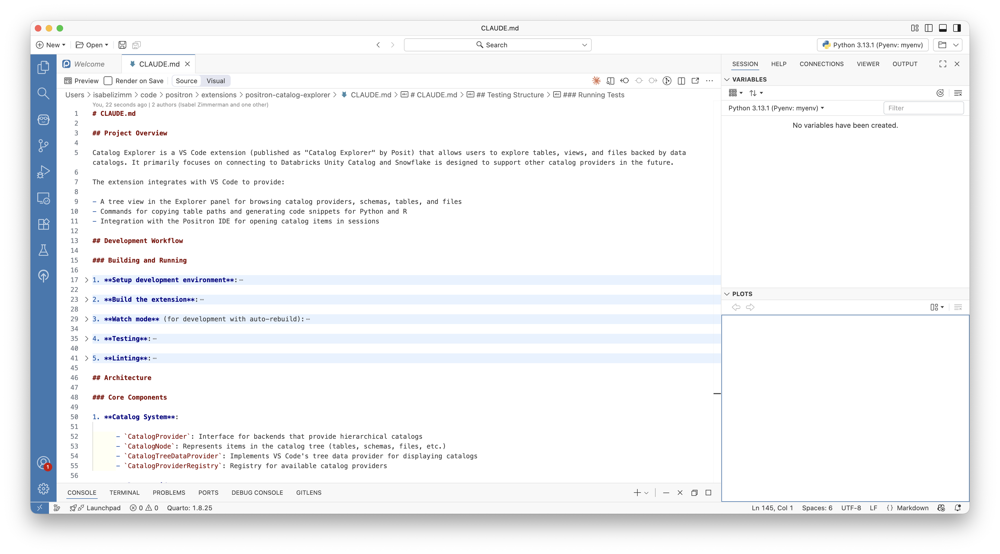

A toolkit for building and using tools
Isabel Zimmerman | Posit, PBC
Welcome!
Why should you care about tools?
Why should you care about tools?
- tool: anything that can be used to carry out a particular function
Why should you care about using tools?
- Thoughtful tool choice
Why should you care about building tools?
- Supercharge your own work
- A tool can be anything, including things you build for only yourself
- You might already actually be building tools!
Why should you care about building tools?
- Supercharge your own work
- A tool can be anything, including things you build for only yourself
- You might already actually be building tools!
Making tools
Skill types
- “hard” skills: the computer elements
- modularity, reproducibility, flexibility
- “soft” skills: the human elements
- knowing your user, understanding needs, delighting in the small things, explaining your work
A tool’s hard skills (the technical side)
1. Modularity
Modularity
- Building from known projects
- Allows tools to grow with users
- Extension packages <3

2. Reproducibility
Reproducibility
- Data folks know how important this is!
- Focus on the creation of reproducible artifacts
Reproducibility: Data Explorer

3. Flexibility
Flexibility
Simple is better than complex. Complex is better than complicated. - Zen of Python
Flexibility: Positron Assistant

Modularity. Reproducibility. Flexibility.
2025: the era of AI everything
2025: the era of AI everything
https://survey.stackoverflow.co/2025/ai#developer-tools-dont-plan-to-use-ai-for-this-task
A tool’s soft-skills (the human side)
1. Know your users
Know your users
- Data scientists: experimentation, exploration, iteration
- Software engineers: driven by a certain outcome
Know your users: console

2. Emphasize discoverability
Emphasize discoverability
- Builders: Understand what gets used
- Users: find the tool that works best with your usual path
Quarto: simple buttons
3. Let little things have big impact
Big impact: run script
Big impact: run script
4. Explain your work
Explain your work
If the implementation is hard to explain, it’s a bad idea. - Zen of Python
Explain your work
Explain your work: help pane

Explain your work (to robots)
Holistic tools
A mission to have beautiful tools
- Considering the input and output of your work
- Take on complexity to make a user’s life easier
Feedback loops
- Use tools
- Notice pain points
- Share with others
Your most powerful tool: your voice!
What makes tools stick?
- The hard skills: modularity, reproducibility, flexibility
- The soft skills: Knowing your users, emphasizing discoverability, building little things for big impact, explaining your work
thank you!
Learn more about Positron @ positron.posit.co
My website @ isabelizimm.me
isabelizimm.me/talk-pydata-tools